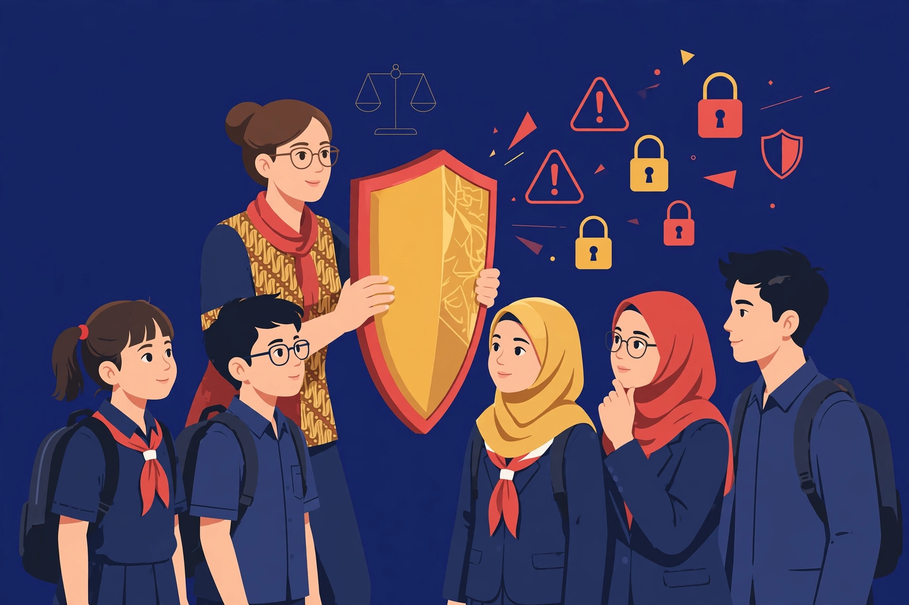

AI dan Literasi Digital dalam Pendidikan
Praktik pemanfaatannya untuk menunjang tugas pokok guru • AI yang cerdas butuh guru yang bijak
HOTEL BBC BANDARJAYA • SELASA, 13 OKTOBER 2026
Lampung Tengah
Halo, saya Gunanto
- Guru Matematika di SMPN 1 Punggur, Lampung Tengah
- Sehari-hari memakai AI untuk membantu perangkat pembelajaran — dan memvalidasinya sebelum dipakai di kelas
- 60 menit ke depan: praktik, bukan teori — yang bisa langsung dicoba besok pagi
Lampung Tengah
Perjalanan kita hari ini
1. Konteks
Kenapa transformasi kompetensi & literasi digital jadi tuntutan guru hari ini
2. Praktik
Di mana AI membantu tugas pokok guru: merencanakan, melaksanakan, menilai, membimbing
3. Validitas Kurikuler
Jebakan AI terhadap panduan mapel — dan cara memeriksanya
4. Validitas Kontekstual
AI tak kenal murid kita — kitalah yang menjembatani
5. Workflow Guru Bijak
4 langkah + contoh prompt, plus peran kepala sekolah
6. Risiko & Etika
Dibahas jujur — lalu penutup dan ajakan bertindak
Lampung Tengah
Transformasi kompetensi bukan pilihan
- Tema besar kita hari ini: transformasi kompetensi guru & tenaga kependidikan melalui AI, kepemimpinan, dan karakter pendidik
- Murid kita sudah hidup di era AI — guru tidak boleh tertinggal satu era dari muridnya
- Tapi transformasi bukan sekadar bisa memakai — melainkan memakai dengan benar, aman, dan bijak
Lampung Tengah
Bukan sekadar bisa memakai
Kecakapan
Mampu memakai AI untuk tugas nyata: perangkat, media, asesmen
Keamanan
Menjaga data murid & data sekolah saat memakai AI
Etika
Jujur soal karya AI, bertanggung jawab atas yang dipakai di kelas
Kebijaksanaan
Kritis memvalidasi — tidak telan mentah output AI
Empat ini saling mengunci. Sesi ini fokus pada yang pertama dan keempat.
Lampung Tengah
Siapa yang pernah minta AI buatkan RPP / modul / LKPD?
Angkat tangannya 🙋 — tidak apa-apa, saya juga.
- Manfaatnya nyata: cepat, hemat waktu, banyak ide — akui, jangan dimusuhi
- Polanya mengkhawatirkan: copy-paste, langsung pakai besok pagi
- AI itu seperti asisten magang super cepat: tidak kenal sekolah kita, tidak baca panduan mapel, dan kadang mengarang dengan percaya diri
Lampung Tengah
Di mana AI bisa membantu?
Merencanakan
ATP, modul ajar, LKPD, bahan ajar, bank soal
Melaksanakan
Bahan tayang, media interaktif, skenario diferensiasi
Menilai
Kisi-kisi, rubrik, analisis hasil, umpan balik
Membimbing
Materi bimbingan, plus administrasi: surat, laporan, rangkuman
Lampung Tengah
AI sebagai drafter perangkat
- Modul ajar / RPP: kerangka kegiatan inti per JP — guru yang mengisi ruhnya
- LKPD: variasi soal per TP + kunci berlangkah — selalu hitung ulang
- ATP: draf alur tujuan per fase — wajib diselaraskan dengan CP resmi
- Bank soal: generator variasi soal — saring sesuai level kelas
Kata kuncinya: drafter, bukan penulis final.
Lampung Tengah
Membuat kelas lebih hidup
- Bahan tayang: kerangka slide per pertemuan — tinggal poles
- Media & aktivitas: ide permainan, kuis, studi kasus sesuai materi
- Diferensiasi: satu materi dalam 3 level — penguatan, inti, pengayaan
- Apersepsi: cerita pembuka / masalah kontekstual yang dekat dengan anak
Lampung Tengah
Asesmen yang selaras
- Kisi-kisi & soal: minta AI memetakan tiap soal ke TP-nya masing-masing
- Rubrik: draf rubrik penskoran uraian / proyek / presentasi
- Analisis: bantu membaca pola hasil — TP mana yang belum tuntas
- Umpan balik: draf kalimat umpan balik yang membangun per level capaian
Syarat mutlak: asesmen harus mengukur TP yang dituju — ini yang paling sering dilanggar AI.
Lampung Tengah
Di luar kelas pun terbantu
- Membimbing: materi bimbingan belajar, motivasi, konseling awal
- Administrasi: draf surat, pengumuman, laporan kegiatan, notulen rapat
- Pengembangan diri: merangkum artikel / jurnal untuk bahan belajar guru
Waktu administrasi berkurang → waktu untuk murid bertambah. Itulah tujuan akhirnya.
Lampung Tengah
Semua itu mudah. Tapi ada satu masalah besar…
“AI tidak membaca panduan mapel. AI tidak kenal murid kita.”— masalahnya bernama VALIDITAS
Lampung Tengah
5 jebakan AI yang paling sering
1. Mengarang acuan
Kode CP salah, TP bukan turunan CP yang benar, fase keliru
2. Salah tahap perkembangan
Aktivitas TK menuntut calistung formal; bahasa SD terlalu abstrak
3. Asesmen tak selaras
Tujuan bilang menalar, soalnya cuma hafalan
4. Salah faktual
Kunci matematika salah hitung, konsep IPA keliru, contoh tak baku
Lampung Tengah
Tiga teknik validasi
Jangkar resmi
Tempel CP/TP asli dari panduan mapel ke dalam prompt — jangan suruh AI mengarang
Tabel keterlacakan
Minta AI memetakan: kegiatan → TP berapa, soal → mengukur TP apa
Audit + verifikasi
Suruh AI mengaudit dirinya sendiri — lalu guru verifikasi manual, hitung ulang kunci
Lampung Tengah
AI tidak kenal murid kita
- TK/PAUD: RPPH 30 menit untuk rentang fokus anak 10 menit; alat-bahan tak ada di sekolah
- SD: instruksi LKPD terlalu panjang — yang diuji jadi kemampuan membaca, bukan materinya
- SMP/SMA: soal “diskon di mal” untuk anak yang belum pernah ke mal
- Semua jenjang: RPP 2 JP dari AI yang realitanya butuh 4 JP
Lampung Tengah
Tiga uji sederhana
Uji baca sebagai murid
Baca perangkat sambil membayangkan anak paling lemah di kelas — nyambung?
Uji waktu & fasilitas
Coret yang butuh alat tak tersedia; potong RPP yang kepadatan
Diferensiasi
Minta AI buatkan 3 level — guru yang menentukan porsinya
Lampung Tengah
4 langkah, setiap kali memakai AI
⚓ Jangkar
Siapkan CP/TP resmi + profil murid sebelum buka AI
✏️ Draf
Minta AI buatkan + tabel keterlacakan + kunci/pedoman
🔍 Validasi
Cek kurikuler dan kontekstual — hitung ulang, uji baca
👥 Uji sejawat
Lewatkan ke teman sejawat sebelum dipakai di kelas
Membuat: 10 menit. Memvalidasi: kerja guru yang sesungguhnya.
Lampung Tengah
Prompt buruk vs baik
❌ Buruk
✅ Baik
Lampung Tengah
Validitas bisa jadi kebijakan sekolah
SOP mini
Perangkat buatan AI wajib lewat checklist validitas + review teman sejawat
Aturan data
Larang memasukkan nama, nilai & data pribadi murid ke AI publik
Komunitas belajar
Jadikan validasi perangkat AI agenda rutin, bukan beban tambahan
“Sekolah yang bijak tidak melarang AI — ia mengatur cara memakainya.”
Lampung Tengah
Risiko & etika
- Ketergantungan: intuisi pedagogis tumpul kalau tak pernah merancang sendiri
- Homogenisasi: prompt sama → LKPD sama untuk murid yang beda-beda
- Data murid: jangan masukkan data pribadi ke AI publik
- Kejujuran profesi: guru harus bisa menjelaskan isi perangkatnya sendiri

“AI tidak punya murid. Tanggung jawab validitas tidak bisa di-outsource.”
Lampung Tengah
AI yang cerdas
butuh guru yang bijak
- Ajakan: minggu depan, coba workflow 4 langkah untuk satu perangkat saja
- Rasakan bedanya: antara cepat jadi dan valid dipakai
- Bagikan pengalaman ke komunitas belajar di sekolah Bapak/Ibu
Mari berdiskusi 💬
Sesi tanya jawab
PGRI KABUPATEN LAMPUNG TENGAH • HOTEL BBC BANDARJAYA • 13 OKTOBER 2026